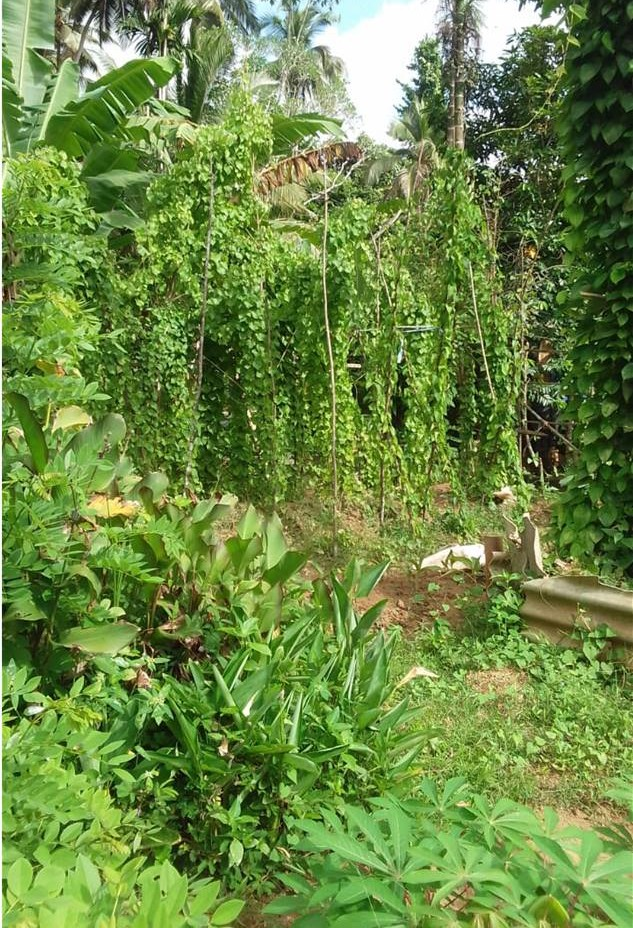

A Living Classroom
Where sustainable
farming comes to life.
Our model farm in Haylesewatte is a hands-on demonstration site where communities learn organic farming methods that work on real land, with real results.

Model Farm Highlights
Rooted in conservation,
grown with communities.
Indigenous yam varieties conserved
Farming and livelihood support
UNDP, Oxfam, IUCN & others
Grassroots support for rural communities


What is a model farm?
A real farm. A living classroom.
The Heleala model farm is not a demonstration in theory it is a working farm. Community members and smallholder farmers visit, observe, and practise proven organic methods on real soil, with real crops, through every season.
- Organic soil preparation and composting
- Water-wise and drought-resilient growing techniques
- Indigenous seed preservation and natural propagation
- Integrated pest management without synthetic chemicals
- Yield-sharing with participating community families
Our crops
What grows here.
Three core crop groups cultivated using traditional knowledge and modern organic practices each one chosen for community value and food security.

Yam & Root Crops
Traditional Sri Lankan yam varieties cultivated using organic methods, preserving indigenous crops while supporting household food security across seasons.

Vegetables & Greens
Seasonal vegetables grown without synthetic chemicals providing nutrition for community families and showing chemical-free farming at practical scale.

Medicinal Herbs
Traditional Ayurvedic and aromatic plants cultivated for community health use and value-added product development linking farming directly with local wellbeing.
Our approach
Four seasons of growth.
A complete cycle of sustainable farming from soil preparation to harvest that communities experience and practise first-hand.
Prepare the Soil
Composting, crop rotation, and organic matter building creates rich, healthy soil that supports long-term yields without any synthetic inputs.
Plant Organically
Using saved local seeds and natural propagation methods, without reliance on synthetic fertilisers or chemical inputs.
Maintain & Monitor
Daily observation and integrated pest management keeps crops healthy. Community members join in learning by doing, season after season.
Harvest & Share
Harvests are used in training and shared within the community completing the cycle and reinforcing practical learning.
Part of something bigger